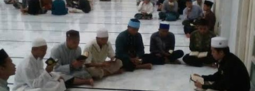
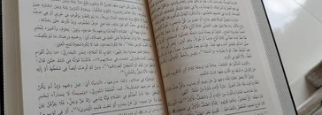
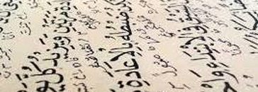

Tahfidz Al-Qur'an
Setoran hafalan harian, muraja'ah terjadwal, dan perbaikan tajwid secara berjenjang sesuai kemampuan santri.
Ma'had Imam Syafi'i menyelenggarakan pendidikan berasrama yang memadukan tahfidz, ilmu syar'i, dan bahasa Arab dalam lingkungan yang tenang dan terbimbing.
Ma'had Imam Syafi'i didirikan untuk membimbing santri mempelajari agama dari sumbernya: Al-Qur'an, as-Sunnah, dan warisan ilmu para ulama. Nama Imam Syafi'i rahimahullah kami pilih sebagai pengingat semangat menuntut ilmu dengan adab, kesungguhan, dan keikhlasan.
Santri tinggal di asrama dengan jadwal harian yang terarah, dibimbing ustadz dan ustadzah yang kami seleksi dari sisi keilmuan dan akhlak.
Tiga program inti yang berjalan bersamaan sepanjang tahun ajaran.

Setoran hafalan harian, muraja'ah terjadwal, dan perbaikan tajwid secara berjenjang sesuai kemampuan santri.

Pembelajaran fikih mazhab Syafi'i, akidah, hadits, dan adab dari kitab-kitab dasar hingga lanjutan.

Nahwu, sharaf, dan percakapan harian agar santri mampu membaca kitab dan berkomunikasi dalam bahasa Arab.
Contoh ritme harian yang kami jalankan. Jam dapat disesuaikan oleh pengurus.
Kegiatan terbaru dari lingkungan Ma'had.
Para santri menyetorkan hafalan di hadapan wali santri dalam acara khataman tahunan.
Program pekanan untuk memperkuat kemampuan membaca kitab dan percakapan harian.
Wali santri diajak memahami pola pendidikan agar pembinaan berlanjut di rumah.